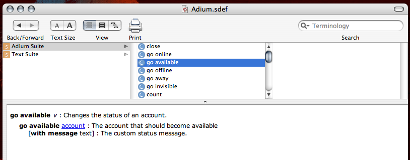
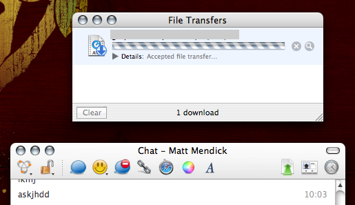
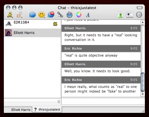

What's new in Adium X?
Adium X 1.2 is here and brings with it many new features. Here are a few of the major improvements.
Improved AppleScript Support (SoC '07) |
|
|  |
Matt Handley greatly expanded Adium's AppleScript support; it is now be possible to control Adium easily via AppleScript, paving the way to even more great user content and control customizability. |
Improved XMPP Support (SoC '07) |
|

|
Andy Monitzer made many improvements to libpurple's XMPP/Jabber support, benefiting not only Adium, but also Pidgin and Finch. |
Improved Bonjour Support (SoC '07) |
|
|  |
Erich Kreutzer modernized, fixed, and expanded Adium's Bonjour support, implementing file transfer in the process. |
Detachable Contact List Groups (SoC '07) |
|

|
Andre Cohen implemented snapping / detachable groups which let you detach groups from the contact list into free-floating windows. |
Group Chat Improvements (SoC '07) |
|
|  |
Erik Beerepoot worked on multi-user conferencing in Adium, making good strides toward a more full-featured, shiny group chat experience. |
Status Menu Item Overhaul |
|

|
The Status Menu Item can now be customized. You can also now view your entire contact list and much more. |
And lots more! |
|
|
For the full list of changes, fixes, and improvements check out the complete Version History. |
|